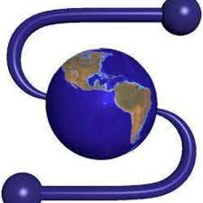
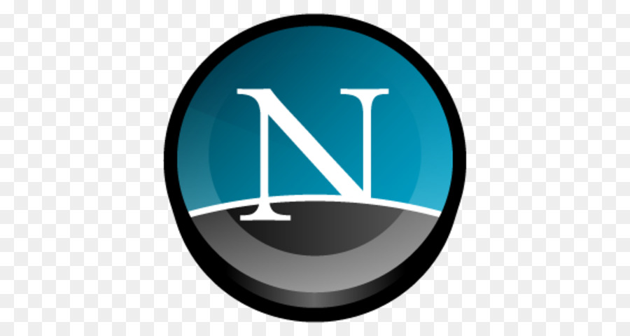
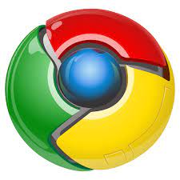

Durante as aulas de
Paradigmas de Programaçao
vamos aprender a desenvolver aplicações para Internet
utilizando técnicas de HTML,CSS e ASPNET

Mosaic - Foi o primeiro navegador a rodar no Windows, fator
determinante para a
abertura da web
para o público em geral. Marc Andreessen, o líder do time que desenvolveu o Mosaic,
saiu da
NCSA e, com Jim Clark, um dos fundadores da Silicon
Graphics, Inc. (SGI) e outros quatro
estudantes formados e nomeados da Universidade de Illinois,
iniciaram o Mosaic Communications
Mosaic Communications
finalmente se tornou a Netscape Communications
produzindo o Netscape
Navigator

Netscape - O Netscape trouxe todas as características que um browser
moderno
oferece nos dias
de hoje, como por exemplo a navegação por abas, o bloqueio de pop
ups, suporte a cookies e
e histórico de visitas, entre outros. Reinou absoluto durante anos,
mas já em 2002 seus usuários se
resumiam a alguns poucos gatos pingados. Um dos
motivos foi o fato da Microsoft passar a incluir
,já em 1995, o Internet Explorer junto com
o sistema operacional Windows.

Chrome - Depois de muita especulação, o Google finalmente se
lança nos
mercado de
navegadores em setembro do ano passado com o Chrome, um navegador 'projetado
do
zero' e com a promessa de ser mais rápido, seguro e estável que os concorrentes.